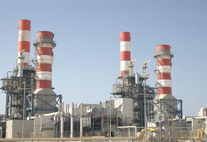
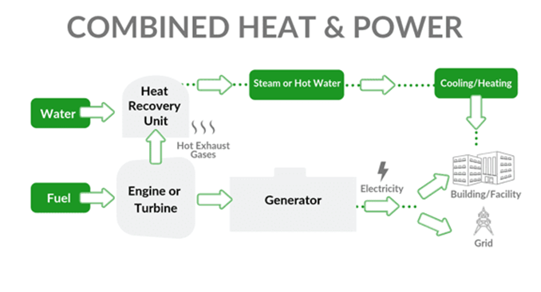
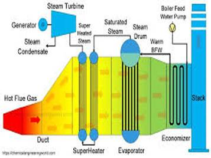

Combined Heat and Power (CHP) / Cogeneration
Engineering and Design
CHP-is it viable for your site or plant?

During the course of our energy auditing work, we have found that CHP is a viable proposition on many sites.CHP can, in the most suitable cases reduce a consumers total energy cost by up to 40%.
However, it is important to stress that CHP is not viable at all sites and further that a poor choice of technology could result in inefficient and uneconomic operation. It is therefore quite important to build a clear picture of what specific factors determine the feasibility and profitability of a CHP scheme.
It is essential for companies to have an independent third party do the CHP feasibility study.
It is important that this independent third party has practical experience of power generation and thermal plant design, selection and installation. It is important that the CHP appraisal takes into account the special need of the host plant, and that the CHP plant should become an integrated part of the host plant and process.
Energy Innovation Ltd is ideally suited to do this work. We have no affiliations with manufacturers, technologies or developers, and are in a position to give an unbiased appraisal of the viability of CHP for a particular site.
The Energy Innovation Ltd. survey takes into account the fact that many host company's' core business is not power generation.
We offer a fixed price CHP Feasibility Study / Appraisal and payback analysis based on current and future Irish energy market conditions.
Contact us for a competitive quotation for your site.
The Scope of Work for a typical CHP appraisal is as follows;
o Evaluation of site energy usage data and energy costs.
o Develop a load factor for the site.
o Determine site heat to power ratio.
o Select a technology and equipment to match site heat to power ratio.
o Investigation of integration of CHP plant with existing plant.
o Equipment selection taking into account cost of equipment, space available.
o Evaluation of redundancy required in system
o Payback analysis based on selected equipment taking into account fuel and Operation Maintenance costs.
o Interfaces - a detailed list of required site interfaces with new equipment.
o Operation and Maintenance - evaluation of suitability of in-house or contract based on equipment selected and the host company philosophy and capabilities.
o Emissions and environmental aspects investigation.
o Control system for CHP plant installation, investigation of possible control philosophy. Investigation of integration of CHP plant into existing plant control system.
o A comprehensive report of the findings will be presented, with all supporting documentation and commercial appraisal of the project.
CHP - What is it ?
Combined heat and power (CHP) is the on-site generation of steam and electricity, Or the Co-Generation of steam and electricity.

Combined Heat and Power, or Cogeneration, is the simultaneous production of electricity and heat, whereby the heat produced in electricity generation is put to good use rather than being wasted. In conventional power generation, about 60% of the energy input is wasted in this way. By recovering the majority of this waste heat, energy savings of between 20% and 40% may be achieved. The installation of CHP has been widely recognised as a key measure to help reduce harmful carbon dioxide emissions being released to the atmosphere while delivering the same amount of useful energy.
It is estimated that for every 1 MW of CHP installed, CO2 emissions are reduced by 1250 tonnes per annum. On balance, cogeneration results in savings of up to 50% of CO2 emissions compared with
conventional sources of heat and power.
Throughout Europe industry has recognised the benefits of CHP for many years. With the impending de-regulation of the energy market in Ireland, and throughout Europe, in the next few years,
the popularity of CHP will increase dramatically.

Ireland will meet its energy requirements in the one of Europes fastest growing economies, in an environmentally sustainable way.Irelands policy for limiting energy related CO2 emissions, in line with international agreements such as the Kyoto protocol specifically mentions CHP as a recommended technology for reducing CO2 emissions.
Currently Ireland has the lowest level of CHP generated electricity in Europe, at only 2%. The installed CHP capacity is currently 111 MW(e). With the recent de-regulation of 26% of the electricity market, and the high economic growth rate in Ireland, there is potential to increase this to 500 MW(e). This would be 12% of the electricity supply capacity, in line with current European trends.
This situation is not confined to Europe, de-regulation of energy markets is a global phenomenon. Many industries in Asia are very keen to embrace the latest innovations also.
Many companies are understandably reluctant to take advantage of the opportunities. Power generation is not their core business, and would mean more work for already scarce resources. This is where Energy Innovation can help.
It is essential for companies to have an independent third party do the CHP project appraisal. It is important that this independent third party has practical experience of power generation and thermal plant design, selection and installation.
It is important that the CHP appraisal takes into account the special requirements of the host plant, and that the CHP plant should become an integrated part of the host plant.
Energy Innovation Ltd is ideally suited to do this work. We have no affiliations with manufacturers, technologies or developers, and are in a position to give an unbiased appraisal of the viability of CHP for a particular site.